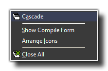

The Window Menu
Here you can find out all about the various options available to you from the drop down window menu.

In this menu you find some typical commands to manage the different properties of the actual windows in the main GameMaker:Studio form :
- Cascade - Cascade all the windows such that each of them is partially visible.
- Show Compile Form - This will show the compile form in the IDE if you have previously closed it.
- Arrange Icons - Arrange all the iconified property windows (Useful in particular when resizing the main form).
- Close All - Close all the property windows, asking the user whether or not to save any changes made.
Back : The Drop Down Menus
Next : The Help Menu